版权信息
warning
本文章为博主原创文章。遵循 CC 4.0 BY-SA 版权协议，转载请附上原文出处链接和本声明。
1. 绘制138译码电路
1.1 138译码器IC器件标准
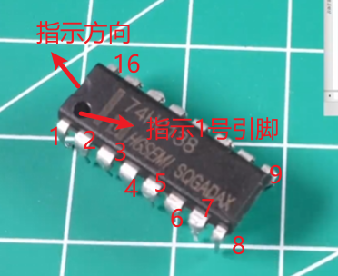
1.2 网络的概念
简单来说，网络是指电路中所有在电气上相互连接在一起的引脚（Pins）的集合。你可以把它理解为一个“逻辑上的导电节点”。在这个节点上的任何一点，理论上电压都是相等的（忽略导线的微小电阻）。
当你把原理图导入到 PCB 界面时，元件起初是散乱放置的。此时，属于同一个网络的引脚之间，会有一根根细细的、交叉的直线连接着。
这就是“飞线”（Ratsnest）。飞线不是实际的铜箔，它只是软件在提示你：“嘿，这两个点在逻辑上属于同一个网络，你一会儿布线的时候记得把它们连起来。”
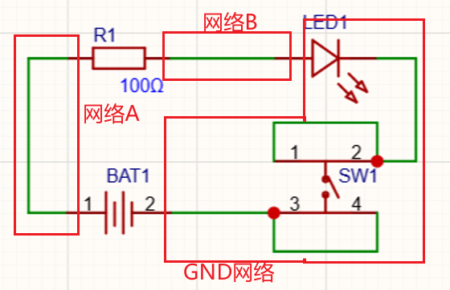
放置网络 M-N
1.3 自锁开关符号的讲解
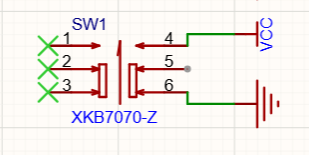
箭头是指按下的方向，松开按钮时，5、6号触点连通；开关按下时，4、5号触点连通。
1.4 跳线帽的使用
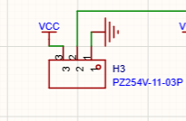
如图，排针的2号引脚连接IC器件的PIN。如果没有跳线帽，则2号引脚浮空。若跳线帽连接3、2，则引脚为高电平。
1.5 批量修改位号
对于同一类型元件，我们可以批量分配/修改位号
先选中所有要分配/修改位号的元器件，然后把他们的位号都修改为 元器件符号+?（例如 R?) 这个“?”就相当于通配符。
然后点击设计——分配位号
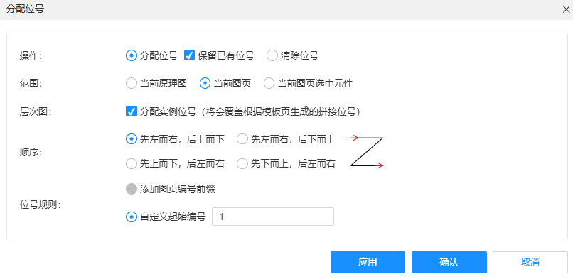
1.6 对齐工具、长度工具
对齐工具和长度工具帮助我们规整化PCB。
1.7 交叉选择
从原理图对应PCB里的元器件
选中原理图中的元器件后 Shift+X，则会同步选择出PCB里对应的元器件。
1.8 布线的原则
1.8.1 从电源开始
-
考虑载流能力。线宽能否承载相应电流。可以使用 PCB导线宽度-载流工具 来估算 建议使用用IPC2152标准。
PCB走线载流计算器-EDA365电子论坛通信数码-人工智能-计算机-半导体-手机家电消费电子硬件门户网站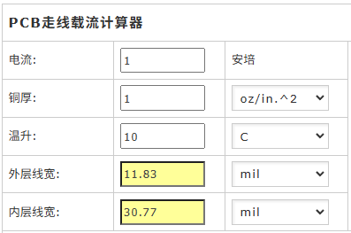
温升：指导线允许的上升温度
内层线宽：多层板中的内层线。因为内层线在内部，不好散热，温升不好控制。该图的含义是，想要承载1A电流，在铜厚1oz、容许温升10度的情况下，需要至少导线宽11.83mill。按照该图，我们可以算出10密尔导线大约能承载885mA电流。
1.8.2 不要走直角线、锐角线
在同一层（同一过孔）引出的线不要走直角、锐角线。T型分线除外。
如果同一过孔想要引出多条线，可以以135度引。
-
错误示范——同层锐角线：
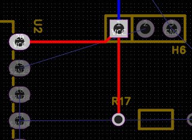
-
建议的引线方式——以135度引出（或T型引出，呈90度。低速信号与电源线适用），不同层的两条线（红和蓝）则可以为锐角：
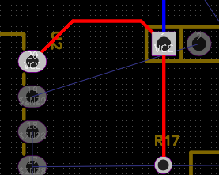
不同层则没有限制，甚至鼓励相邻两层的走线走向应当互相垂直以避免电磁耦合。
为什么过孔可以T型分线？
- 过孔是一个大铜盘： 过孔本身是一个圆形的金属环。当两条线成 180° 对穿，或者成 90° 像 T 字一样从过孔中心向外引出时，它们实际上是分别连接在这个大圆盘的边缘上。
- 消灭了锐角死胡同： 因为有中间那个巨大的圆形焊盘作为“缓冲地带”，两条导线之间并没有直接形成一个狭窄的“V”型或“L”型内角。因此，蚀刻药水不会卡在这里，完美避开了“酸角”效应和铜皮剥离的机械应力问题。（如果配合泪滴，就更加平滑牢固了）。
1.9 持续高亮选中的网络
Shift+H。
1.10 铺铜
用于连接GND网络。
两种与铜的连接方式 点开设计——设计规则
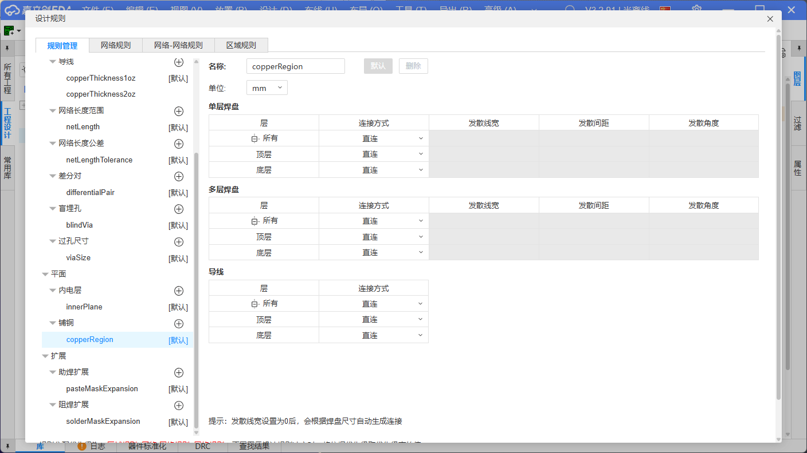
单层焊盘：贴片式的就是单层
多层：多见于插式元器件
- 发散
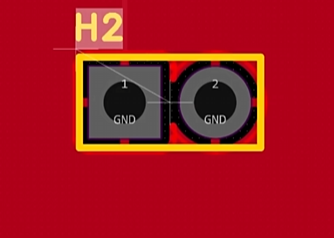
- 直连：适合大电流
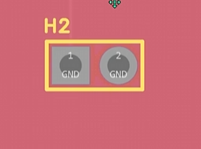
改完后需要点击PCB铺铜区域——重建铺铜区。
1.11 泪滴
点开工具——泪滴
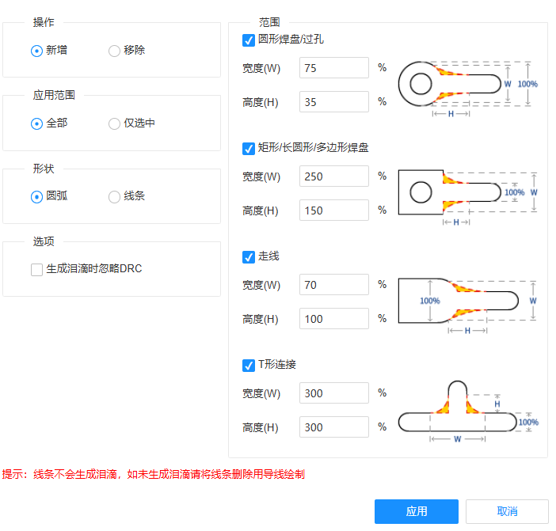
它会在导线和过孔连接的过渡区域，自动铺设一层平滑的水滴状铜皮。不仅能完美消除应力集中，还能加固连接点，彻底避免钻孔偏差导致的断线问题。
1.12 丝印
略
1.13 USB供电
简单介绍
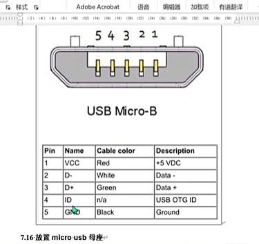
OTG引脚，若接地，则表明该设备为主设备，向外部供电；若接VCC或高阻态则表明该设备为从设备，向外部索要电源供给。